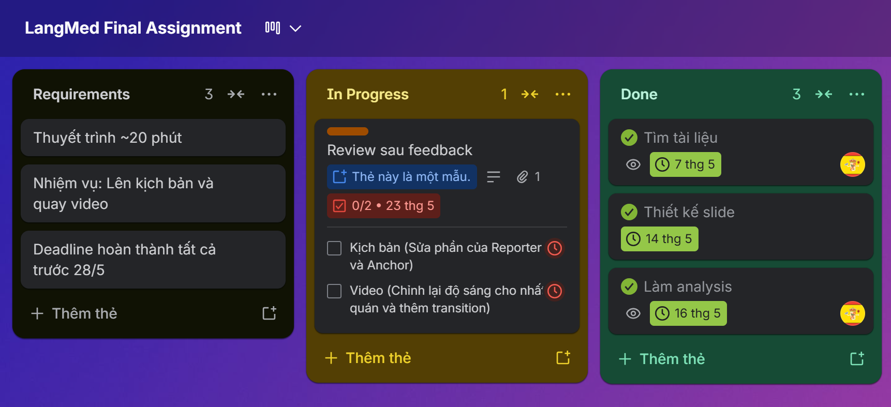
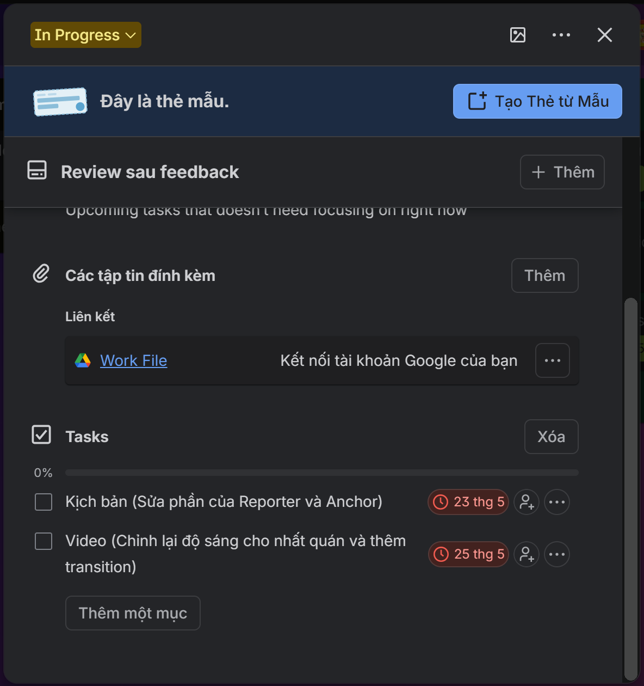
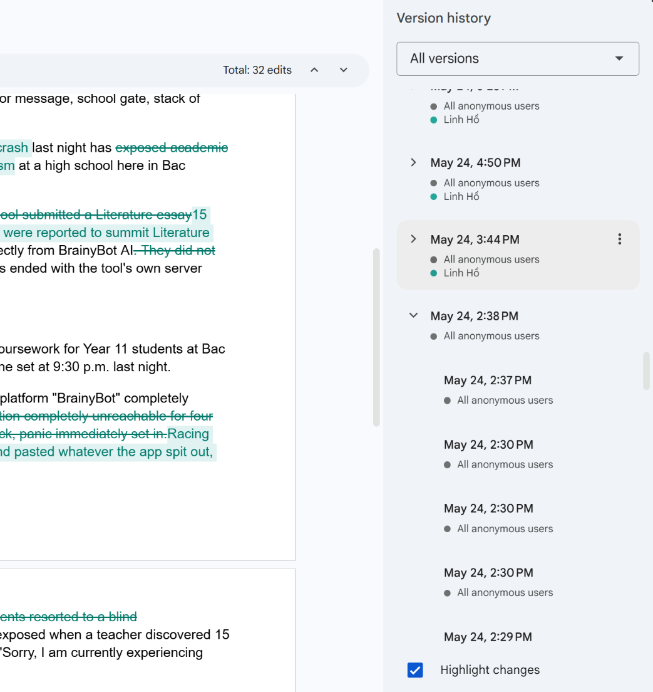
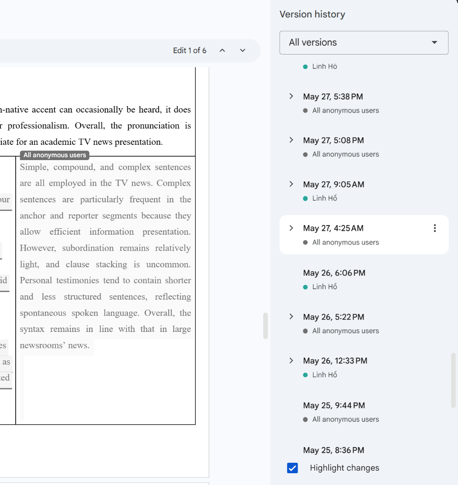
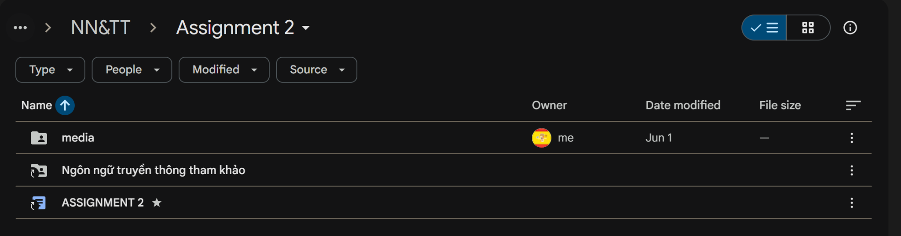
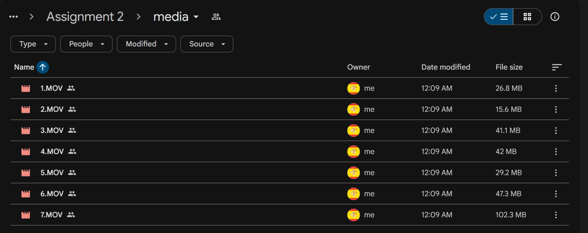
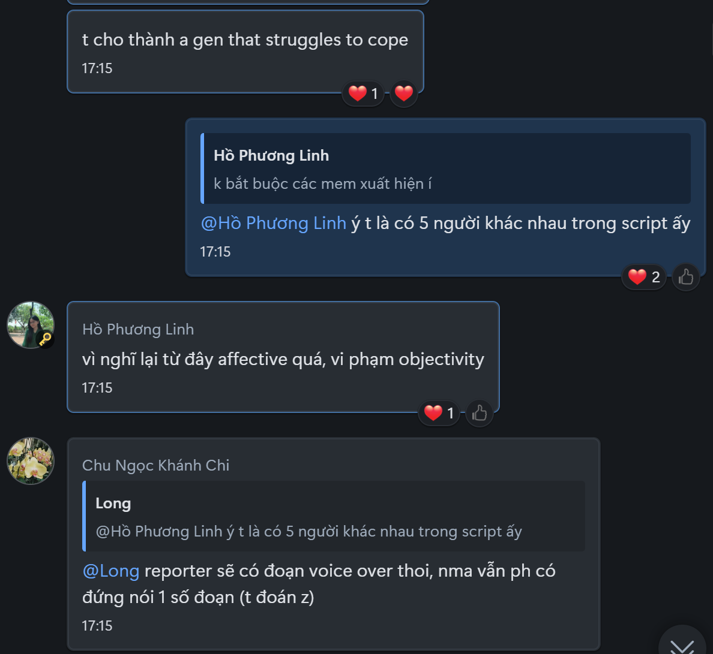
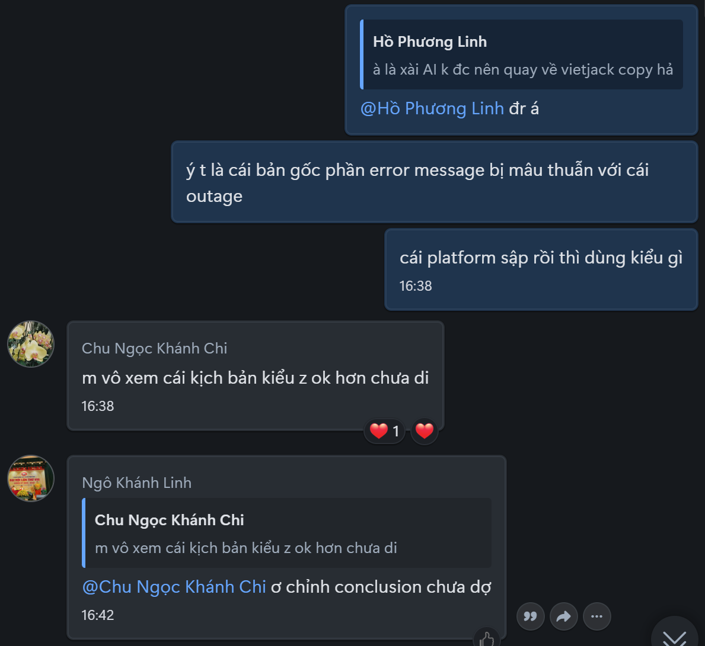
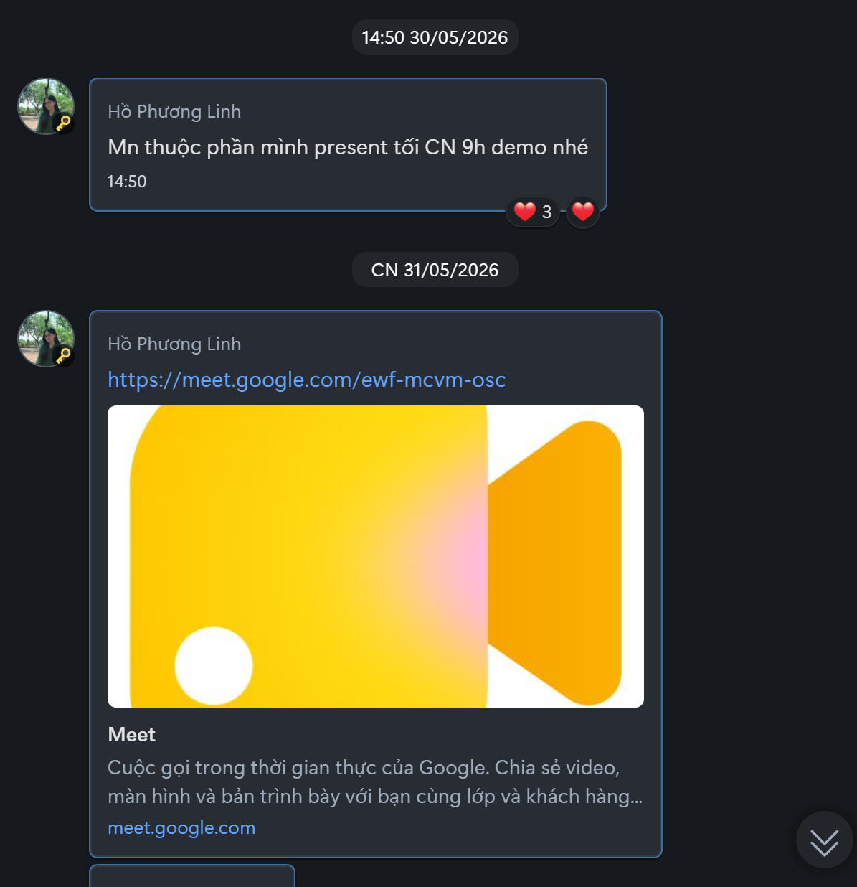

NV4 - BÁO CÁO SỬ DỤNG CÔNG CỤ HỢP TÁC TRỰC TUYẾN TRONG DỰ ÁN NHÓM
Thời gian đăng tải: 2026-06-07
Thông tin bài tập
Mô tả
Báo cáo quá trình ứng dụng và đánh giá hiệu quả của các công cụ cộng tác trực tuyến (Trello, Google Docs, Google Drive, Zalo, Google Meet) nhằm quản lý công việc, trao đổi thông tin và phân công nhiệm vụ trong suốt dự án nhóm một tuần.
Mục tiêu
Xây dựng bản tin truyền hình hoàn chỉnh (TV News) và thực hiện phân tích ngôn ngữ - truyền thông của sản phẩm cho học phần Language Media, đồng thời tối ưu hóa hiệu suất phối hợp, giải quyết các thách thức phát sinh khi làm việc nhóm từ xa.
Công nghệ & Công cụ sử dụng
1. Giới thiệu
Trong dự án nhóm kéo dài một tuần, em đã sử dụng các công cụ hợp tác trực tuyến để quản lý công việc, trao đổi thông tin và lưu trữ tài liệu. Các công cụ chính gồm Trello, Google Docs, Google Drive, Zalo và Google Meet. Những công cụ này hỗ trợ hiệu quả quá trình làm việc nhóm, giúp tăng tính phối hợp và đảm bảo tiến độ dự án.
2. Tổng quan nhiệm vụ
Dự án cuối kỳ của học phần Language Media yêu cầu nhóm xây dựng một bản tin truyền hình (TV News) hoàn chỉnh và thực hiện phân tích ngôn ngữ – truyền thông của sản phẩm này.
Cụ thể, nhóm thực hiện các bước:
- Lên ý tưởng và xây dựng nội dung bản tin
- Viết kịch bản và quay video
- Biên tập sản phẩm hoàn chỉnh
- Phân tích ngôn ngữ, cấu trúc diễn ngôn và hiệu quả truyền thông của bản tin
Sản phẩm cuối cùng gồm:
- Video bản tin truyền hình
- Bài phân tích học thuật
- Tài liệu hỗ trợ liên quan
3. Quá trình sử dụng công cụ
3.1. Trello – Quản lý nhiệm vụ
Trello được sử dụng để theo dõi tiến độ công việc cá nhân và nhóm. Mỗi nhiệm vụ được tạo dưới dạng thẻ với tiêu đề, mô tả và deadline cụ thể.
Các trạng thái công việc gồm:
- In Progress
- Done
Ngoài ra, nhóm sử dụng label màu để phân loại mức độ ưu tiên. Trello giúp em theo dõi rõ ràng các nhiệm vụ được giao và đảm bảo hoàn thành đúng tiến độ.


3.2. Google Docs – Soạn thảo và cộng tác nội dung
Google Docs được sử dụng để viết và chỉnh sửa báo cáo phân tích chung của nhóm. Các thành viên có thể cùng chỉnh sửa trong thời gian thực mà không cần gửi file qua lại.
Trong quá trình làm việc, em đã:
- Chỉnh sửa nội dung và lỗi ngôn ngữ
- Bổ sung phần phân tích được phân công
- Góp ý và hoàn thiện kịch bản quay video
Công cụ này giúp tăng hiệu quả cộng tác và đảm bảo tính thống nhất của tài liệu.


3.3. Google Drive – Lưu trữ và quản lý tài liệu
Google Drive là nơi lưu trữ tập trung toàn bộ tài liệu dự án, bao gồm:
- Kịch bản
- Bản thảo phân tích
- Hình ảnh và video
- Tài liệu tham khảo
Nhóm tổ chức thư mục theo cấu trúc rõ ràng và đặt tên file đơn giản, dễ hiểu để thuận tiện tìm kiếm. Cách làm này giúp giảm thời gian quản lý và hạn chế nhầm lẫn giữa các phiên bản tài liệu.


3.4. Zalo – Giao tiếp nhóm
Zalo được chọn làm công cụ giao tiếp chính do tính phổ biến tại Việt Nam và sự quen thuộc của tất cả thành viên.
Các chức năng sử dụng:
- Nhắn tin nhóm
- Gọi thoại và video
- Chia sẻ tài liệu nhanh
Trong quá trình làm việc, em thường xuyên trao đổi tiến độ, tham gia thảo luận và hỗ trợ các thành viên khác. Zalo giúp duy trì kết nối liên tục và giảm hiểu nhầm trong giao tiếp.


3.5. Google Meet – Họp trực tuyến
Google Meet được sử dụng cho các buổi họp quan trọng nhằm thảo luận và thống nhất quyết định.
Ưu điểm:
- Giao tiếp trực tiếp giúp trao đổi rõ ràng hơn
- Hỗ trợ chia sẻ màn hình để xem tài liệu chung
- Phù hợp cho việc rà soát và chỉnh sửa nội dung nhóm
Việc kết hợp Google Meet và Zalo giúp nhóm vừa trao đổi nhanh hằng ngày, vừa có các buổi họp chuyên sâu khi cần.

4. Hiệu quả của các công cụ
Việc sử dụng các công cụ trực tuyến đã giúp nhóm làm việc hiệu quả hơn trong suốt dự án.
- Trello Giúp quản lý công việc rõ ràng và theo dõi tiến độ trực quan
- Google Docs Hỗ trợ chỉnh sửa đồng thời, giảm trùng lặp phiên bản
- Google Drive Đảm bảo lưu trữ tập trung và truy cập dễ dàng
- Zalo Giúp giao tiếp nhanh và liên tục
- Google Meet Hỗ trợ thảo luận sâu và ra quyết định hiệu quả
Sự kết hợp giữa các công cụ giúp tối ưu hóa quá trình phối hợp và nâng cao hiệu suất làm việc nhóm.
5. Thách thức và giải pháp
-
Thách thức 1: Phản hồi không đồng đều
Một số thành viên phản hồi chậm do lịch học và công việc khác nhau, ảnh hưởng đến tiến độ chung.
Giải pháp: Thống nhất sử dụng Zalo làm kênh chính và đặt các mốc thời gian rõ ràng để cập nhật tiến độ.
-
Thách thức 2: Chỉnh sửa tài liệu chồng chéo
Nhiều người cùng chỉnh sửa dẫn đến xung đột nội dung.
Giải pháp: Phân công rõ ràng từng phần cho từng thành viên, hạn chế chỉnh sửa chồng chéo và ưu tiên góp ý trước khi thay đổi.
-
Thách thức 3: Quản lý nhiều loại tài liệu
Số lượng file lớn gây khó khăn trong việc tìm kiếm.
Giải pháp: Sử dụng Google Drive với cấu trúc thư mục rõ ràng và quy tắc đặt tên thống nhất.
6. Kết luận
Qua dự án, em đã cải thiện đáng kể kỹ năng sử dụng công cụ hợp tác trực tuyến cũng như khả năng quản lý công việc cá nhân trong môi trường làm việc nhóm.
Việc kết hợp nhiều công cụ như Trello, Google Docs, Google Drive, Zalo và Google Meet giúp nâng cao hiệu quả phối hợp, đảm bảo tiến độ và chất lượng sản phẩm. Đây là những kỹ năng quan trọng và có giá trị lâu dài trong học tập và công việc tương lai.